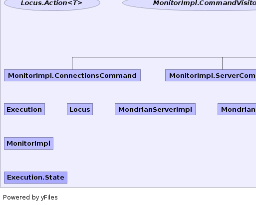

- Overview
- Package
- Class
- Tree
- Deprecated
- Index
- Help
| Interface | Description |
|---|---|
| Locus.Action<T> | |
| MonitorImpl.CommandVisitor<T> |
Extension to
Visitor to allow commands as well as events. |
| Repository |
Callback by which a
MondrianServer finds its
databases, catalogs and schemas. |
| RepositoryContentFinder |
Callback to get the content of the repository as an XML string.
|
| Statement |
Internal context corresponding to a statement.
|
| Class | Description |
|---|---|
| DynamicContentFinder |
Implementation of
RepositoryContentFinder that
periodically reloads the content of the repository. |
| Execution |
Execution context.
|
| FileRepository |
Implementation of
Repository that reads
from a datasources.xml file. |
| ImplicitRepository |
Implementation of
Repository for
a server that doesn't have a repository: each connection in the server
has its own catalog (specified in the connect string) and therefore the
catalog and schema metadata will be whatever pertains to that connection. |
| Locus |
Point of execution from which a service is invoked.
|
| MondrianServerImpl |
Implementation of
MondrianServer. |
| MondrianServerRegistry |
Registry of all servers within this JVM, and also serves as a factory for
servers.
|
| MonitorImpl |
Process that reads from the monitor stream and updates counters.
|
| MonitorImpl.Command |
A kind of message that produces a response.
|
| MonitorImpl.ConnectionsCommand | |
| MonitorImpl.ServerCommand | |
| MonitorImpl.ShutdownCommand | |
| MonitorImpl.SqlStatementsCommand | |
| MonitorImpl.StatementsCommand | |
| StatementImpl |
Implementation of
Statement. |
| StringRepositoryContentFinder |
Implementation of
RepositoryContentFinder that always
returns a constant string. |
| UrlRepositoryContentFinder |
Implementation of
RepositoryContentFinder that reads
from a URL. |
| Enum | Description |
|---|---|
| Execution.State |
Enumeration of the states of an Execution instance.
|
Whereas the embedded engine is configured, started and managed by the container, a server has its own services such as repository, authentication, management of sessions and statements.
|  |